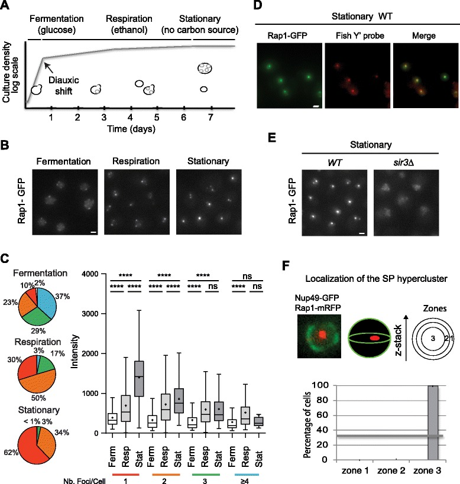

quiescent telomere hypercluster
A nuclear assembly in which multiple chromosome ends and associated subtelomeric chromatin coalesce into fewer enlarged foci during quiescence, characterized in Saccharomyces cerevisiae and Schizosaccharomyces pombe. Nuclear position and assembly requirements depend on species, strain and starvation conditions. [DOI:10.1186/s13059-015-0766-2]

NCBITaxon:4932) · Micol Guidi, Myriam Ruault, Martial Marbouty, Isabelle Loïodice, Axel Cournac, Cyrille Billaudeau, Antoine Hocher, Julien Mozziconacci, Romain Koszul, Angela Taddei; CC BY 4.0, via PubMed Central; unmodified Figure 1. · CC_BY_4_0 · source: PMC PMC4581094.1 Fig1 · DOI:10.1186/s13059-015-0766-2Synonyms: telomere hypercluster; telomeric hypercluster
Part of: GO:0005634
Has part: GO:0000781 GO:0099115
Components
| Component | Type | Part of / acts on | Grounding | Genes | Stoichiometry | Essential | Role |
|---|---|---|---|---|---|---|---|
| telomere | DNA | part of | SO:0000624 | UNKNOWN | Chromosome-end DNA brought together within the nuclear assembly.
| ||
| subtelomere | DNA | part of | SO:0001997 | UNKNOWN | Subtelomeric DNA associated with the coalescing chromosome ends.
| ||
| nucleosome | OTHER | part of | GO:0000786 | UNKNOWN | DNA-histone packing unit of the associated subtelomeric chromatin.
| ||
| Sirtuin family | PROTEIN | part of | InterPro:IPR003000 | SIR2 | UNKNOWN | Sir2-class chromatin factor detected in budding-yeast telomere hyperclusters.
| |
| Sir3-like silencing protein | PROTEIN | part of | REVIEWED_LABEL_ONLY | SIR3 | UNKNOWN | Budding-yeast chromatin constituent supporting telomere coalescence.
| |
| Sir4-like silencing protein | PROTEIN | part of | REVIEWED_LABEL_ONLY | SIR4 | UNKNOWN | Budding-yeast SIR constituent associated with clustered chromosome ends.
| |
| TE2IP/Rap1 | PROTEIN | part of | InterPro:IPR039595 | RAP1 | UNKNOWN | Telomere-associated Rap1 class; the curated direct-localization example is from budding yeast.
| |
| Ku80 | PROTEIN | part of | InterPro:IPR024193 | YKU80 | DISPENSABLE | Ku80-class protein detected at budding-yeast hyperclusters without a single-deletion assembly requirement.
| |
| Taz1-like telomere-binding protein | PROTEIN | part of | REVIEWED_LABEL_ONLY | taz1 | UNKNOWN | Fission-yeast chromosome-end constituent used to image hyperclustering.
| |
| Heterochromatin-associated chromo domain-containing protein | PROTEIN | part of | InterPro:IPR051219 | swi6 | UNKNOWN | Swi6-class constituent of fission-yeast subtelomeric heterochromatin followed during hyperclustering.
| |
| Esc1-like nuclear-envelope anchoring protein | PROTEIN | acts on | REVIEWED_LABEL_ONLY | ESC1 | DISPENSABLE | Condition-dependent peripheral positioning machinery for budding-yeast chromosome-end assemblies, not a stoichiometric focus-core constituent.
| |
| Bouquet formation protein 4 | PROTEIN | acts on | InterPro:IPR037548 | bqt4 | DISPENSABLE | Fission-yeast nuclear-envelope machinery retaining chromosome ends at the periphery during quiescence.
|
Organism-specific protein examples
Named proteins in which each component's role was established, with the organism the evidence comes from. The component above is the taxon-agnostic family; these are the specific entries behind it.
Sirtuin family
| Accession | Protein | Gene | Organism | Entry |
|---|---|---|---|---|
UniProtKB:P06700 | NAD-dependent histone deacetylase SIR2 | SIR2 | Saccharomyces cerevisiae S288C (NCBITaxon:559292) | REVIEWED |
Role and evidence (2 references)Reference-sequence exemplar; the accession does not imply that the reference stock was the exact experimental strain.
| ||||
Sir3-like silencing protein
| Accession | Protein | Gene | Organism | Entry |
|---|---|---|---|---|
UniProtKB:P06701 | Regulatory protein SIR3 | SIR3 | Saccharomyces cerevisiae S288C (NCBITaxon:559292) | REVIEWED |
Role and evidence (2 references)Reference-sequence exemplar; the accession does not imply that the reference stock was the exact experimental strain.
| ||||
Sir4-like silencing protein
| Accession | Protein | Gene | Organism | Entry |
|---|---|---|---|---|
UniProtKB:P11978 | Regulatory protein SIR4 | SIR4 | Saccharomyces cerevisiae S288C (NCBITaxon:559292) | REVIEWED |
Role and evidence (2 references)Reference-sequence exemplar; the accession does not imply that the reference stock was the exact experimental strain.
| ||||
TE2IP/Rap1
| Accession | Protein | Gene | Organism | Entry |
|---|---|---|---|---|
UniProtKB:P11938 | DNA-binding protein RAP1 | RAP1 | Saccharomyces cerevisiae S288C (NCBITaxon:559292) | REVIEWED |
Role and evidence (2 references)Reference-sequence exemplar; the accession does not imply that the reference stock was the exact experimental strain.
| ||||
Ku80
| Accession | Protein | Gene | Organism | Entry |
|---|---|---|---|---|
UniProtKB:Q04437 | ATP-dependent DNA helicase II subunit 2 | YKU80 | Saccharomyces cerevisiae S288C (NCBITaxon:559292) | REVIEWED |
Role and evidence (2 references)Reference-sequence exemplar; the accession does not imply that the reference stock was the exact experimental strain.
| ||||
Taz1-like telomere-binding protein
| Accession | Protein | Gene | Organism | Entry |
|---|---|---|---|---|
UniProtKB:P79005 | Telomere length regulator taz1 | taz1 | Schizosaccharomyces pombe 972h- (NCBITaxon:284812) | REVIEWED |
Role and evidence (2 references)Reference-sequence exemplar; the accession does not imply that the reference stock was the exact experimental strain.
| ||||
Heterochromatin-associated chromo domain-containing protein
| Accession | Protein | Gene | Organism | Entry |
|---|---|---|---|---|
UniProtKB:P40381 | Chromatin-associated protein swi6 | swi6 | Schizosaccharomyces pombe 972h- (NCBITaxon:284812) | REVIEWED |
Role and evidence (2 references)Reference-sequence exemplar; the accession does not imply that the reference stock was the exact experimental strain.
| ||||
Esc1-like nuclear-envelope anchoring protein
| Accession | Protein | Gene | Organism | Entry |
|---|---|---|---|---|
UniProtKB:Q03661 | Silent chromatin protein ESC1 | ESC1 | Saccharomyces cerevisiae S288C (NCBITaxon:559292) | REVIEWED |
Role and evidence (2 references)Reference-sequence exemplar; the accession does not imply that the reference stock was the exact experimental strain.
| ||||
Bouquet formation protein 4
| Accession | Protein | Gene | Organism | Entry |
|---|---|---|---|---|
UniProtKB:O60158 | Bouquet formation protein 4 | bqt4 | Schizosaccharomyces pombe 972h- (NCBITaxon:284812) | REVIEWED |
Role and evidence (2 references)Reference-sequence exemplar; the accession does not imply that the reference stock was the exact experimental strain.
| ||||
Canonical examples
NCBITaxon:4932Saccharomyces cerevisiae — Budding yeast studied in W303 and BY backgrounds. Central hyperclusters in density-enriched quiescent populations and peripheral clusters under other published conditions are retained as distinct observations, not forced into one nuclear position. [DOI:10.1186/s13059-015-0766-2]NCBITaxon:4896Schizosaccharomyces pombe — Nitrogen-starved fission yeast forms a predominantly single bright telomeric focus near the nuclear envelope; clustering and envelope attachment are experimentally separable. [DOI:10.1093/nar/gkaa043]
Functions
- telomere organization
GO:0032200— Spatial grouping of chromosome ends and associated chromatin during quiescence.DOI:10.1186/s13059-015-0766-2Microscopy and chromosome-contact maps support chromosome-end reorganization.DOI:10.1093/nar/gkaa043Fission-yeast microscopy supports a quiescent redistribution of telomere foci; envelope-dependent TERRA regulation is not assigned to clustering alone.
Mechanism graphs
Condition-dependent budding-yeast hypercluster assembly (ASSEMBLY)
| Subject | Predicate | Object | Evidence |
|---|---|---|---|
| Starvation after respiratory growth | stimulates | Telomere hypercluster formation |
|
| Sir3-like silencing protein | supports | Telomere hypercluster formation |
|
| Assembly-compatible histone H4 K16 state | supports | Telomere hypercluster formation |
|
Anchoring is separable from cluster formation (REGULATION)
| Subject | Predicate | Object | Evidence |
|---|---|---|---|
| Esc1-like anchoring machinery | supports | Peripheral cluster position in tested budding yeast |
|
| Bouquet formation protein 4 | supports | Peripheral cluster position in nitrogen-starved fission yeast |
|
Budding-yeast declustering during quiescence exit (DISASSEMBLY)
| Subject | Predicate | Object | Evidence |
|---|---|---|---|
| Nutrient refeeding | stimulates | Telomere hypercluster dispersal |
|
Discussions
- CURATION_TODO (RESOLVED): Keep the multi-chromosome assembly separate from individual telomeres and other nuclear structures.
- CURATION_TODO (OPEN): Find exact whole-protein family identifiers for Sir3, Sir4, Taz1 and Esc1.
- KNOWLEDGE_GAP (OPEN): Resolve condition-dependent central versus peripheral hyperclusters without assigning one universal position.
- KNOWLEDGE_GAP (OPEN): Review the full published 2026 Esc1 study when accessible.
- CURATION_TODO (RESOLVED): Separate required factors in specific assays from universal component necessity.
- CURATION_TODO (RESOLVED): Do not import whole regulatory complexes, markers or tethering diagrams as focus composition.
- KNOWLEDGE_GAP (OPEN): Resolve survival effects without equating grouping, silencing and envelope attachment.
- CURATION_TODO (RESOLVED): Keep transcriptional transitions separate from hypercluster dynamics.
- CURATION_TODO (RESOLVED): Keep experimental taxon, microscopy and morphology scope explicit.
- CURATION_TODO (RESOLVED): Separate article CC BY permission from the accompanying data waiver.
More images
Image (not hosted — OTHER): PMC4907721.1 F1
NCBITaxon:4932) · Damien Laporte, Fabien Courtout, Sylvain Tollis, Isabelle Sagot; CC BY-NC-SA 3.0, via PubMed Central. · OTHER · source: PMC PMC4907721.1 F1 · DOI:10.1091/mbc.E16-01-0069Image (not hosted — CC_BY_NC_4_0): PMC7102995.1 F1
NCBITaxon:4896) · Laetitia Maestroni, Céline Reyes, Mélina Vaurs, Yannick Gachet, Sylvie Tournier, Vincent Géli, Stéphane Coulon; CC BY-NC 4.0, via PubMed Central. · CC_BY_NC_4_0 · source: PMC PMC7102995.1 F1 · DOI:10.1093/nar/gkaa043Datasets
- Guidi et al. 2015 (
10.6084/m9.figshare.1505174.v1) · FIGSHARE · STRUCTURAL_IMAGING
Organism: Saccharomyces cerevisiaeNative Figshare API metadata checked on 2026-10-05: version 1, CC BY 4.0, raw-image ZIP 150807_Guidi_et_al_2015_raw_images.zip, 46976914 bytes. Whole-field Z-stacks and projections differ from cropped publication panels. The ZIP was not downloaded or independently reanalyzed.
- Saccharomyces cerevisiae (
PRJNA291473) · NCBI_BIOPROJECT · GENOMICS
Organism: Saccharomyces cerevisiaePrimary-paper data availability and native ENA project XML checked; secondary accession SRP062308. No raw reads were downloaded and no independent contact-map reconstruction was performed.
- Spatial reorganization of telomeres in long-lived quiescent cells (
GSE71273) · NCBI_GEO · GENOMICS
Organism: Saccharomyces cerevisiae · Platform: ChIP-chipNative GEO series metadata checked on 2026-10-05: four samples, duplicate comparisons, GPL4131; this is not a transcriptomics assay. Its project PRJNA290776 is distinct from chromosome-conformation project PRJNA291473. Raw arrays were not downloaded or reanalyzed.
Evidence
DOI:10.1186/s13059-015-0766-2Guidi et al. 2015, PMID 26399229; native PMC4581094.1 Results, Discussion and relevant Methods read. Density purification, microscopy, 3C/Hi-C and chronological-survival assays.DOI:10.1091/mbc.E16-01-0069Laporte et al. 2016, PMID 27122604; native PMC4907721.1 Results, Discussion and relevant Methods read. FISH, tagged proteins, positioning, chromatin perturbations and refeeding assays.DOI:10.1093/nar/gkaa043Maestroni et al. 2020, PMID 31980821; native PMC7102995.1 Results, Discussion and relevant Methods read. Nitrogen-starved fission yeast; clustering, attachment, telomere erosion and TERRA accumulation are distinguished.DOI:10.1101/gr.279874.124Baquero Perez et al. 2025, PMID 40796281; native PMC12487827.1 clustering-related Results and Methods read. Transcriptional shutdown and reactivation are separable from cluster formation and dispersal.GO:0032993Native protein-DNA complex definition is broader than the multi-chromosome quiescent assembly.GO:0005634Native nucleus term grounds the encompassing compartment.GO:0000781Native chromosome, telomeric region term denotes a constituent chromosome-end region, not the whole hypercluster.GO:0099115Native chromosome, subtelomeric region term denotes adjacent chromatin participating in the assembly.
Curation history
2026-10-05T17:46:33Zcodex · CREATED_RECORD — Scaffolded by scripts/new_record.py2026-10-05T17:49:23Zcodex · EXPANDED_RECORD — Added twelve component classes, nine verified protein examples, species-scoped mechanisms, three dataset links, one hosted and two link-only inspected figures, and explicit evidence conflicts and access limits.
Source: data/structures/other/quiescent_telomere_hypercluster.yaml